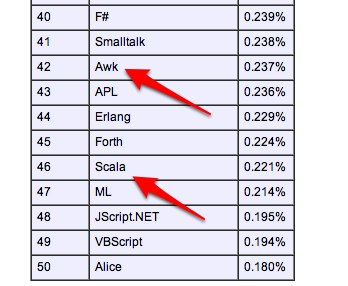
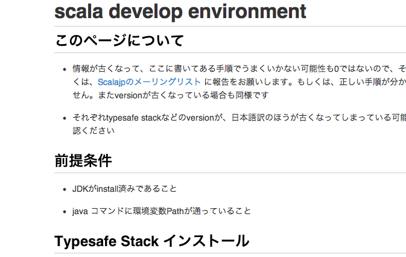

自己紹介（1/2）
自己紹介（2/2）
- Scalaはまだ検証中
- ちゃんとした物をそろそろ作りたい
好きなもの
競技プログラミング
ACM-ICPCのチームが
組めました。
明日が初陣！
今後聞きたい内容
「いまさら始める
GUIプログラミング」
お品書き
- Scalaの現状
- 特徴＆文法のはなし
- 開発環境について（時間があったら）
- Scalaのアツい分野
Scalaってなに？
Scalable language
使い捨ての
スクリプトから
サーバーサイドまで
読み方
- すから？
- すかーら？
- すけいら？
「その言語って
人気なの？」

「えっ」
「本当に大丈夫？」
日本Scala
ユーザーズグループ
ScalaJP（2011/12 〜）

- 最新安定版: 2.9.2
- → 2.10？
今週の水曜日に Milestone-4 が出た
近いうちにRC版が出る？
お品書き
- Scalaの現状
- 特徴＆文法のはなし
- 開発環境について
- Scalaのアツい分野
- JavaのVM上で動作
- 全てがオブジェクト
- シンタックス・シュガーが充実
- オブジェクト指向言語と関数型言語を統合
- 静的（型システムが超強力）
JavaのVM(JVM)で
動作する
JVM上で動く言語
- Java
- Groovy
- Jruby
- Jython
- Clojure
- Scala
ほかにもたくさん！
何がうれしい？
Javaのファイルがそのまま使える
- Java用のライブラリ
- 過去に書いたJavaのコード
その逆も
- JavaからScalaコードを呼び出し
ライブコーディングやります
今からやること
- Javaのライブラリを使いたいので、Twitter4Jを使います
- #histudy タグの付いたツイートを拾ってみる
Javaの場合
import twitter4j.*;
import java.util.List;
// main関数
Twitter twitter =
new TwitterFactory().getInstance();
Query query = new Query();
query.setQuery("#histudy");
try {
List<Tweet> result =
twitter.search(query).getTweets();
for(Tweet tweet : result) {
System.out.println("--------------------");
System.out.println(tweet.getFromUser());
System.out.println(tweet.getText());
}
} catch(TwitterException e) {
e.printStackTrace();
}
実行方法
- コンパイル →
scalaクラス名 - スクリプト形式 →
scalaファイル名 ←コレでやる - REPL（対話環境）
実演
Scalaの場合
import twitter4j._
import scala.collection.JavaConversions._
val twitter =
new TwitterFactory().getInstance
val query = new Query()
query.setQuery("#histudy")
val result =
twitter.search(query).getTweets
result.foreach { tweet =>
println("-" * 20)
println(tweet.getFromUser)
println(tweet.getText)
}
見所が多すぎるので
- import文
- 型推論
- 例外処理
- for文
- 高階関数
- 暗黙の型変換
これだけにしてくださいorz
- import文
- 型推論
- 例外処理
- for文
- 高階関数
- 暗黙の型変換
比較
Twitter twitter =
new TwitterFactory().getInstance();
↓
val twitter =
new TwitterFactory().getInstance
見どころ
- 変数の宣言
- 型推論
- いろいろ省略
変数について
- 型はコロンの後ろに
int i;
↓
var i: Int
- varは普通の変数
- valは再代入禁止（const, final）
var a: String = "foo"
a = "bar"
val b: String = "foo"
b = "bar" // →コンパイルエラー
型推論
- 変数の型
- 関数の戻り値の型
書かなくても（だいたい）補完
Javaだと・・・
ArrayList<Integer> list =
new ArrayList<Integer>();
Java 7では
ArrayList<Integer> list =
new ArrayList<>();
Scalaでは
val list: ArrayList[Int] = new ArrayList[Int]()
↓
val list = new ArrayList[Int]()
右辺から
左辺の型を
推測してくれる
※注意※
型を書いたほうが
分かりやすいことも多い
「型が動的に変わる」
というわけではない
// ↓Int型
var s = 123
// ↓String型
s = "foo" // => コンパイルエラー
元の話に
戻ります
Twitter twitter =
new TwitterFactory().getInstance();
↓
val twitter =
new TwitterFactory().getInstance
セミコロンは
省略できる
print(foo);
↓
print(foo)
引数を取らない関数は
カッコ要らない
val twitter =
new TwitterFactory().getInstance()
↓
val twitter =
new TwitterFactory.getInstance
ドットの省略
val twitter =
new TwitterFactory.getInstance
↓
val twitter =
new TwitterFactory getInstance
※注意※
- 境界が不明瞭だといろいろ面倒…
- 読みやすさとのバランスも大事
次
- 暗黙の型変換
- 高階関数
- for
出力のループ部分
// result : java.util.List<Tweet>
result.foreach { tweet =>
// 表示する処理
}
forで書いても良かったが…
// result : java.util.List<Tweet>
result.foreach { tweet =>
// 表示する処理
}
for(tweet <- result) {
// 表示する処理
}
result.foreach { tweet =>
// 表示する処理
}
Rubyだと…
result.each do |tweet|
# 表示する処理
end
何か気づきませんか？
// result : java.util.List<Tweet>
result.foreach { tweet =>
// 表示する処理
}
// result : java.util.List<Tweet>
result.foreach { tweet =>
// 表示処理
}
この部分も気になるが…
// result : java.util.List<Tweet>
result.foreach { tweet =>
// 表示処理
}
Listにこんなメソッドあったっけ？
JavaのListには
もちろん無い
import twitter4j._
import scala.collection.JavaConversions._
val twitter =
new TwitterFactory().getInstance
いったいどこから？
import twitter4j._
import scala.collection. JavaConversions._
val twitter =
new TwitterFactory().getInstance
！
implicit def asScalaBuffer[A](l : ju.List[A]):
mutable.Buffer[A] = l match {
case MutableBufferWrapper(wrapped) => wrapped
case _ =>new JListWrapper(l)
}
こんなコードがあった
暗黙の型変換(Implicit Conversion)
必要に応じて他のクラスに
自動で変換するための関数を定義できる
例：Intの場合
↓scala.Predef に定義
implicit def intWrapper(x: Int): RichInt =
new RichInt(x)
使用例
(-123).abs // => 123
1.to(10)
// => Range(1, 2, 3, 4, 5, 6, 7, 8, 9, 10)
// ↑あとで使う！
// result : java.util.List<Tweet>
result.foreach { tweet =>
// 表示する処理
}
result は IterableLike に変換された
result.foreach { tweet =>
println("-" * 20)
println(tweet.getFromUser)
println(tweet.getText)
}
関数型はじまるよー！
Scalaでは
関数 ∈ 値
と、考えて良い
- 変数に関数を入れられる
- 関数の引数に関数をとれる
- 関数の返り値として関数を返せる
- 変数に関数を入れられる
- 関数の引数に関数をとれる←コレを説明
- 関数の返り値として関数を返せる
コレクションの操作に便利！
def foreach[U](f: A => U)
foreach は
「値を１つ取って何かする」関数をとる
def puts(x: Int) {
println(x)
}
List(1, 2, 3).foreach(puts)
これでも良いが…
List(1, 2, 3).foreach { (x: Int) =>
println(x)
}
やっぱり無名関数！
例
map(f: A => B)
- A型の値を引数に取って
- B型の値に変換する
という関数を引数に取る
List(1, 2, 3).map((x: Int) => 2 * x)
// => List(2, 4, 6)
例
filter(f: A => Boolean)
- A型の値を引数に取って
- 条件に合うか判定する
という関数を引数に取る
List(1, 2, 3).filter((x: Int) => x % 2 != 0)
// => List(1, 3)
例
exists(f: A => Boolean)
- A型の値を引数に取って
- 条件に合うか判定する
という関数を引数に取る
List(1, 2, 3).filter((x: Int) => x < 0)
// => false
(x: Int) => 2 * x
→ 無名関数
- JavaScript
function(n) {
return 2 * n;
}
- Ruby
{|x| 2 * x}
- 引数が１個なのでカッコを外す
map(x: Int => 2 * x)
- 引数は型推論
map(x => 2 * x)
- アンダースコアを使う（Perlの$_）
map(2 * _)
・ 2.* は引数を１個とる関数である
map(2 *)
for文の話
for(tweet <- result) {
// 表示する処理
}
Scalaのfor文は
Javaで言うforeach
Java
// list := List<Integer> { 1, 2, 3 }
for( int i : list ) {
// なにかする
}
普通の繰り返し
for( i <- 1 to 10 ) {
println(i)
}
1 to 10 は 1.to(10)の略記法
暗黙の型変換でRangeオブジェクトができる
for(i <- 1 to 10)
↓
for(i <- (new RichInt(1)).to(10))
↓
for(i <- Range.inclusive(1, 10))
でも、それだけじゃない
val s = for( i <- List(1, 2, 3) )
yield i * 2
// s == List(2, 4, 6)
forの中にif
for {
i <- List(3, 1, 4, 1, 5)
if i <= 3
} println(i)
N重ループ
for {
i <- 1 to 9
j <- 1 to 9
} println(i * j)
// => 九九の表示
なんか似てない？
for( i <- List(2, 7, 1, 8) )
println(i)
List(2, 7, 1, 8).foreach { i =>
println(i)
}
なんか似てない？
val s = for( i <- List(1, 2, 3) )
yield i * 2
val s = List(1, 2, 3).map { i => i * 2 }
なんか似てない？
for {
i <- List(2, 3, 5, 7)
if i <= 3
} println(i)
List(2, 3, 5, 7)
.filter { _ <= 3 }
.foreach { println _ }
Scalaのforは
- foreach
- map(flatMap)
- filter(withFilter)
に変換するシンタックス・シュガー

某純粋関数型言語みたいなことが…
お品書き
- Scalaの現状
- 特徴＆文法のはなし
- 開発環境について
- Scalaのアツい分野
どれがオススメ？
- 先を行ってる Intellij IDEA
- 使い慣れているなら Eclipse
sbt
- Simple Build Tool
- Scalaのビルドツールのデファクト・スタンダード
- GithubでScalaのプロジェクトを見ると、だいたいコレ
できること
- 変更のあったファイルだけ再ビルド
- テストの自動化
- リポジトリからライブラリを取ってくる
→ 最初は利点が見えにくい？
環境を整えるなら
ScalaJPで検索！

お品書き
- Scalaの現状
- 特徴＆文法のはなし
- 開発環境について
- Scalaのアツい分野
※個人的な視点による
1. WEBフレームワーク
Scalatra
RubyのSinatra的なもの
Lift
View First という珍しいアーキテクチャ
Play framework
1.0 → 2.0 のときに Java → Scala
2. 並列処理
標準ライブラリが充実
- actor
- pararell collection
3. もっと強力な言語に
Scalaz
Haskellライクなことができる
┌（┌ ＾o＾）┐モナドォ…
まとめ
- Javaと簡単に連携できる
- いろいろ省略できる（自己責任）
- 這いよる関数型言語
- 暗黙の型変換という怪しい機能
- 乗るしかない、このビッグウェーブに